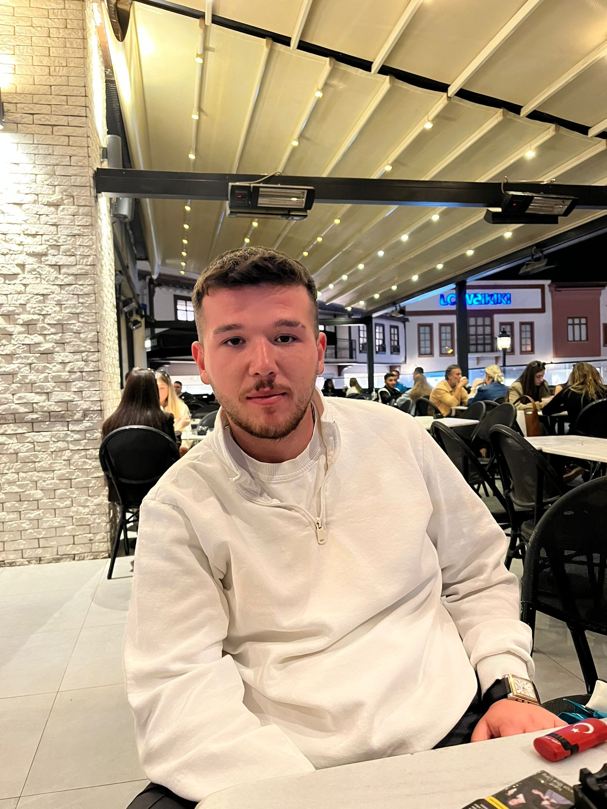

Web Tasarım Dersi Final Projesi | <Body> Guards
AKADEMİK DANIŞMAN
AKÜ İİBFAna Sayfa, Dizzy Goals, Store Sayfaları & Görsel Tasarım
230218066Harekete Geç, Ekibimiz, Hakkında , sosyal medya kiti Sayfaları & İçerik Yönetimi & Link yönlendirmeleri
240218079
Ne Yapabilirim, SKA Nedir Sayfaları & Afiş Tasarımı
240218008